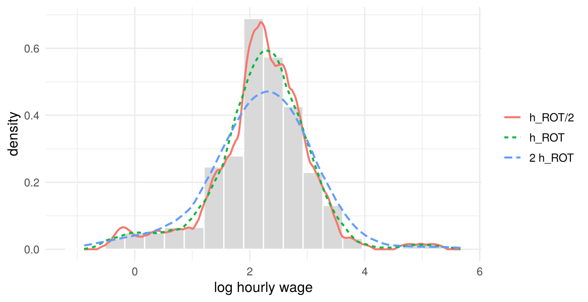
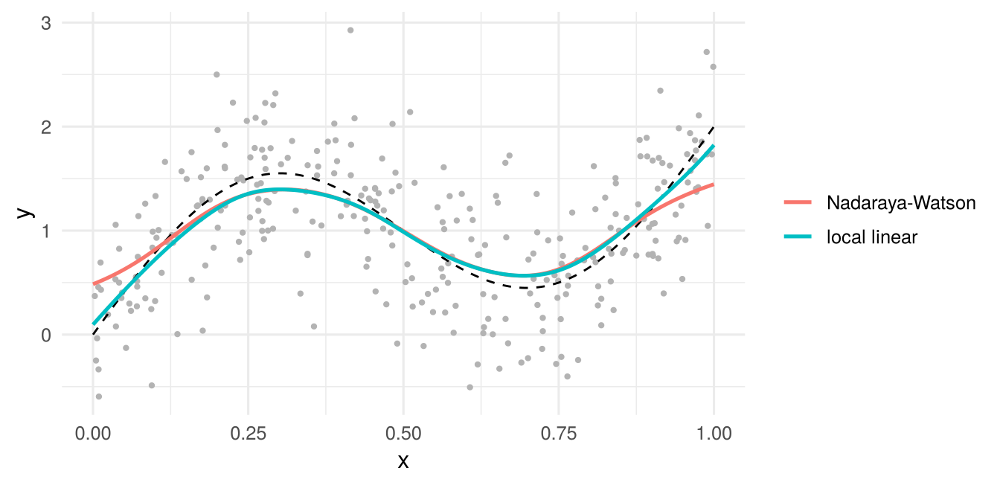

| bins | \(x\) | \(f(x)\) | mean | bias | bias (Thm) | variance | \(f/(nh)\) |
|---|---|---|---|---|---|---|---|
| 20 | 0.112 | 1.571 | 1.669 | 0.098 | 0.111 | 0.031 | 0.031 |
| 20 | 0.218 | 2.085 | 2.090 | 0.005 | 0.011 | 0.037 | 0.042 |
| 20 | 0.314 | 2.028 | 1.995 | -0.032 | -0.027 | 0.037 | 0.041 |
| 20 | 0.422 | 1.630 | 1.612 | -0.018 | -0.014 | 0.031 | 0.033 |
| 20 | 0.584 | 0.841 | 0.878 | 0.037 | 0.041 | 0.017 | 0.017 |
| 40 | 0.112 | 1.571 | 1.573 | 0.002 | 0.002 | 0.058 | 0.063 |
| 40 | 0.218 | 2.085 | 2.070 | -0.016 | -0.009 | 0.079 | 0.083 |
| 40 | 0.314 | 2.028 | 2.028 | 0.000 | 0.003 | 0.075 | 0.081 |
| 40 | 0.422 | 1.630 | 1.671 | 0.041 | 0.044 | 0.061 | 0.065 |
| 40 | 0.584 | 0.841 | 0.826 | -0.016 | -0.017 | 0.032 | 0.034 |
4 Nonparametric Methods
\[ \newcommand{\bm}[1]{\boldsymbol{#1}} \newcommand{\btheta}{\boldsymbol{\theta}} \newcommand{\bbeta}{\boldsymbol{\beta}} \newcommand{\bgamma}{\boldsymbol{\gamma}} \newcommand{\bx}{\boldsymbol{x}} \newcommand{\by}{\boldsymbol{y}} \newcommand{\bX}{\boldsymbol{X}} \newcommand{\bR}{\boldsymbol{R}} \newcommand{\br}{\boldsymbol{r}} \newcommand{\bh}{\boldsymbol{h}} \newcommand{\bz}{\boldsymbol{z}} \newcommand{\bZ}{\boldsymbol{Z}} \newcommand{\bW}{\boldsymbol{W}} \newcommand{\bA}{\boldsymbol{A}} \newcommand{\bV}{\boldsymbol{V}} \newcommand{\bu}{\boldsymbol{u}} \newcommand{\bw}{\boldsymbol{w}} \newcommand{\bpsi}{\boldsymbol{\psi}} \newcommand{\balpha}{\boldsymbol{\alpha}} \newcommand{\bdelta}{\boldsymbol{\delta}} \newcommand{\bmu}{\boldsymbol{\mu}} \newcommand{\bg}{\boldsymbol{g}} \newcommand{\bS}{\boldsymbol{S}} \newcommand{\bD}{\boldsymbol{D}} \newcommand{\bI}{\boldsymbol{I}} \newcommand{\E}{\mathbb{E}} \newcommand{\Var}{\operatorname{Var}} \newcommand{\AVar}{\operatorname{Avar}} \newcommand{\cvp}{\xrightarrow{\;p\;}} \newcommand{\cvd}{\xrightarrow{\;d\;}} \newcommand{\iid}{\overset{\text{iid}}{\sim}} \newcommand{\KLIC}{\operatorname{KLIC}} \newcommand{\pd}[2]{\frac{\partial #1}{\partial #2}} \]
Readings
The previous chapters assumed that the model is known up to a finite-dimensional parameter: a density \(f(y\mid\bx;\btheta)\) for ML, a moment function \(\bpsi(\bw,\btheta)\) for GMM. This chapter drops that assumption for the two objects applied work cares about most, the density of a variable and the conditional mean of \(y\) given \(x\). The price is a slower rate of convergence, a bandwidth that has to be chosen, and the curse of dimensionality. Semiparametric models, sketched at the end, keep some parametric structure to avoid the worst of these costs.
4.1 Parametric, nonparametric and semiparametric models
Much of applied econometrics estimates a conditional expectation function (CEF), \[ y_i=m(\bx_i)+\varepsilon_i,\qquad \E[\varepsilon_i\mid\bx_i]=0,\qquad m(\bx)=\E[y_i\mid\bx_i=\bx]. \] There are three ways to model \(m(\cdot)\).
- Parametric: \(m(\bx)=g(\bx,\btheta)\) with \(g\) known and \(\btheta\) finite-dimensional, e.g. \(\bx'\bbeta\) or \(\Phi(\bx'\bbeta)\). If \(g\) is correct, this is efficient, allows extrapolation outside the data and often has a behavioural interpretation. If \(g\) is wrong, the estimates converge to a pseudo-true value (Section 1.6) that may be far from anything of interest. Specification searches over many \(g\)’s do not solve this: the correct model need not be among those tried, need not be selected, and the search invalidates the usual inference.
- Nonparametric: \(m\) is only assumed to be smooth. This minimizes the risk of misspecification and is useful for exploring data and for checking parametric models. The costs: slower convergence, results that are hard to display for more than two regressors, and precision that deteriorates quickly with the dimension of \(\bx\) (the curse of dimensionality, Section 4.3.4).
- Semiparametric: part of the model is parametric and part is not, for example \(m(\bx,z)=\bx'\bbeta+\lambda(z)\) with \(\lambda\) unknown (partially linear), or \(m(\bx)=g(\bx'\bbeta)\) with \(g\) unknown (single index). Some authors also call a model semiparametric if the mean is parametric but the error distribution is left unspecified, which covers GMM.
4.2 Density estimation
Let \(X_1,\ldots,X_n\) be i.i.d. with distribution function \(F\) and density \(f\). A parametric estimator fits \(f(x\mid\btheta)\), e.g. \(N(\mu,\sigma^2)\), which imposes symmetry, unimodality and thin tails; as Li and Racine (2007) put it, the approach is somewhat circular, because we need to know the form of the density we want to estimate.
4.2.1 The histogram
Divide the support into bins \((b_j,b_{j+1}]\) of width \(h=b_{j+1}-b_j\), \(j=1,\ldots,k\). The empirical distribution function \(\hat F(x)=n^{-1}\#\{i:X_i\le x\}\) estimates \(F\) consistently, and \(f(x)=\lim_{h\to0}\{F(b_{j+1})-F(b_j)\}/h\) for \(x\in(b_j,b_{j+1}]\). Replacing \(F\) by \(\hat F\) and keeping \(h\) positive gives the histogram.
Definition 4.1 (Histogram estimator) For \(x\in(b_j,b_{j+1}]\), \[ \hat f(x)=\frac{\#\{i:X_i\in(b_j,b_{j+1}]\}}{nh}=\frac1n\sum_{i=1}^nW_{hi}(x),\qquad W_{hi}(x)=\begin{cases}1/h&\text{if $X_i$ and $x$ are in the same bin,}\\0&\text{otherwise.}\end{cases} \]
The histogram is a proper density: \(\hat f\ge0\), and \(\int\hat f(x)\,dx=\sum_jh\cdot\#\{X_i\in\text{bin }j\}/(nh)=1\).
Theorem 4.1 (Bias and variance of the histogram) Let \(f\) have a bounded second derivative and let \(x\in(b_j,b_{j+1}]\). As \(h\to0\) and \(nh\to\infty\), \[ \E[\hat f(x)]-f(x)=\tfrac12f'(x)\big[h-2(x-b_j)\big]+O(h^2),\qquad \Var[\hat f(x)]=\frac{f(x)}{nh}+o\Big(\frac1{nh}\Big). \]
Proof
Bias. \(\E[\hat f(x)]=\E[W_{hi}(x)]=h^{-1}\{F(b_{j+1})-F(b_j)\}\). Expand \(F(b)=F(x)+f(x)(b-x)+\frac12f'(x)(b-x)^2+R\) around \(x\) for \(b=b_j\) and \(b=b_{j+1}\). Both distances are at most \(h\), so the remainders are \(O(h^3)\). The terms \(F(x)\) cancel, \(f(x)(b_{j+1}-b_j)/h=f(x)\), and \((b_{j+1}-x)^2-(b_j-x)^2=h\{h-2(x-b_j)\}\), which gives the result.
Variance. \(nh\hat f(x)\) is binomial with success probability \(p=F(b_{j+1})-F(b_j)=hf(x)+O(h^2)\), so \(\Var[\hat f(x)]=p(1-p)/(nh^2)=f(x)/(nh)+O(1/n)\).
The bias is of order \(h\), has the sign of \(f'(x)\) in the left half of a bin and the opposite sign in the right half, and vanishes only at the bin centre. The variance is of order \(1/(nh)\) and proportional to \(f(x)\). A wider bin reduces the variance and increases the bias: this bias-variance trade-off is the central theme of the chapter. Since \(\text{MSE}=\Var+\text{bias}^2\to0\) when \(h\to0\) and \(nh\to\infty\), the histogram is consistent.
Table 4.1 shows the trade-off. Doubling the number of bins roughly doubles the variance everywhere. The bias does not fall at every point: at a given \(x\) it depends on where \(x\) happens to lie in its bin, and at \(x=0.422\) it even rises. What halves is the largest possible bias in a bin, \(|f'(x)|h/2\). The approximations of Theorem 4.1 are accurate.
Optimal bin width. A global criterion is the integrated MSE. Integrating the variance gives \(1/(nh)\); integrating the squared bias over a bin gives approximately \(f'(x)^2\int_0^h(h/2-t)^2dt/h=f'(x)^2h^2/12\) per unit length. Hence \[ \text{AIMSE}(h)=\frac1{nh}+\frac{h^2}{12}\int f'(x)^2dx,\qquad h^*=\Big(\frac{6}{n\int f'(x)^2dx}\Big)^{1/3}\propto n^{-1/3}, \] and the AIMSE at \(h^*\) is of order \(n^{-2/3}\). For a normal reference density \(\int f'^2=1/(4\sqrt\pi\sigma^3)\), so \(h^*=(24\sqrt\pi)^{1/3}\sigma n^{-1/3}\approx3.49\,\sigma n^{-1/3}\); for an exponential with mean \(\lambda\), \(h^*\approx2.29\,\lambda n^{-1/3}\).
Drawbacks. The histogram is a step function, depends on the location of the bin edges, has a bias of order \(h\) that is largest at the edges, and weights all observations in a bin equally, although those close to \(x\) carry more information about \(f(x)\).
4.2.2 Kernel density estimation
The histogram uses the observations in a bin containing \(x\). The kernel estimator centres the window at \(x\). A histogram with a single bin \([x-h,x+h]\) is \[ \hat f(x)=\frac{1}{2nh}\#\{i:|X_i-x|\le h\}=\frac1{nh}\sum_{i=1}^nK\Big(\frac{X_i-x}{h}\Big),\qquad K(u)=\tfrac12\mathbb 1\{|u|\le1\}, \] which suggests replacing the uniform weight \(K\) by one that declines smoothly with the distance from \(x\).
Definition 4.2 (Kernel density estimator) \[ \hat f(x)=\frac1{nh}\sum_{i=1}^nK\Big(\frac{X_i-x}{h}\Big)=\frac1n\sum_{i=1}^nK_h(X_i-x),\qquad K_h(u)=\frac1hK\Big(\frac uh\Big), \] where \(h>0\) is the bandwidth and the kernel \(K\) is a symmetric function with \(\int K(u)\,du=1\). A second-order kernel also satisfies \(\mu_2(K)=\int u^2K(u)\,du\in(0,\infty)\). We write \(R_K=\int K(u)^2du\) (the slides write \(\|K\|_2^2\)).
If \(K\ge0\), \(\hat f\) is itself a density: an average of \(n\) small densities centred at the observations. Table 4.2 lists the common kernels.
| Kernel | \(K(u)\) | \(\mu_2(K)\) | \(R_K\) | \(\delta_0\) |
|---|---|---|---|---|
| Uniform | \(\frac12\mathbb 1\{\lvert u\rvert\le1\}\) | \(1/3\) | \(1/2\) | 1.3510 |
| Triangular | \((1-\lvert u\rvert)\mathbb 1\{\lvert u\rvert\le1\}\) | \(1/6\) | \(2/3\) | 1.8882 |
| Epanechnikov | \(\frac34(1-u^2)\mathbb 1\{\lvert u\rvert\le1\}\) | \(1/5\) | \(3/5\) | 1.7188 |
| Quartic (biweight) | \(\frac{15}{16}(1-u^2)^2\mathbb 1\{\lvert u\rvert\le1\}\) | \(1/7\) | \(5/7\) | 2.0362 |
| Gaussian | \(\phi(u)\) | \(1\) | \(1/(2\sqrt\pi)\) | 0.7764 |
Theorem 4.2 (Bias and variance of the kernel density estimator) Let \(f\) be twice continuously differentiable near \(x\) and \(K\) a second-order kernel. As \(h\to0\) and \(nh\to\infty\), \[ \E[\hat f(x)]-f(x)=\tfrac12h^2\mu_2(K)f''(x)+o(h^2),\qquad \Var[\hat f(x)]=\frac{R_Kf(x)}{nh}+o\Big(\frac1{nh}\Big). \]
Proof
Bias. Substituting \(u=(t-x)/h\), \[ \E[\hat f(x)]=\int\frac1hK\Big(\frac{t-x}{h}\Big)f(t)\,dt=\int K(u)f(x+hu)\,du . \] A second-order expansion \(f(x+hu)=f(x)+huf'(x)+\frac12h^2u^2f''(x)+o(h^2)\) and the kernel properties \(\int K=1\), \(\int uK=0\) (symmetry) and \(\int u^2K=\mu_2\) give the result.
Variance. The summands are i.i.d., so \(\Var[\hat f(x)]=n^{-1}\Var[K_h(X_i-x)]=n^{-1}\{\E[K_h(X_i-x)^2]-(\E[K_h(X_i-x)])^2\}\). The same substitution gives \(\E[K_h^2]=h^{-1}\int K(u)^2f(x+hu)\,du=h^{-1}R_Kf(x)+O(1)\), and \((\E[K_h])^2=O(1)\).
Compared with the histogram, the bias is of order \(h^2\) instead of \(h\) and depends on the curvature \(f''\), not the slope: the estimator underestimates peaks (\(f''<0\)) and overestimates troughs (\(f''>0\)). The variance has the same order \(1/(nh)\) and increases with \(R_K\).
Optimal bandwidth. Integrating the leading terms of the MSE gives the asymptotic mean integrated squared error \[ \text{AMISE}(h)=\frac{R_K}{nh}+\frac{h^4}{4}\mu_2(K)^2R(f''),\qquad R(f'')=\int f''(x)^2dx . \] Setting the derivative to zero, \[ h_{opt}=\Big(\frac{R_K}{\mu_2(K)^2R(f'')\,n}\Big)^{1/5}\propto n^{-1/5},\qquad \text{AMISE}(h_{opt})=\tfrac54\big(\mu_2(K)^2R(f'')\big)^{1/5}R_K^{4/5}\,n^{-4/5}. \] The kernel estimator converges at rate \(n^{-4/5}\) in MISE, faster than the histogram (\(n^{-2/3}\)), but slower than a correctly specified parametric model (\(n^{-1}\)). The optimal bandwidth depends on the kernel, the sample size and the unknown curvature \(R(f'')\).
Rule of thumb. If \(f\) is \(N(\mu,\sigma^2)\), then \(R(f'')=3/(8\sqrt\pi\sigma^5)\approx0.212\sigma^{-5}\) and \[ h_{opt}=\delta_0\Big(\frac{8\sqrt\pi}{3}\Big)^{1/5}\sigma n^{-1/5}\approx1.3643\,\delta_0\,\hat\sigma\,n^{-1/5},\qquad \hat\sigma=\min\Big\{s,\frac{\text{IQR}}{1.349}\Big\}, \tag{4.1}\] with \(\delta_0\) from Table 4.2; for the Gaussian kernel \(h\approx1.06\,\hat\sigma n^{-1/5}\). Using the smaller of the standard deviation and the scaled interquartile range protects against outliers and skewness (Silverman 1986). The rule works well for unimodal, roughly symmetric densities and oversmooths multimodal ones.
Least-squares cross-validation. Choose \(h\) to minimize an estimate of the integrated squared error \(\int(\hat f_h-f)^2=\int\hat f_h^2-2\int\hat f_hf+\int f^2\). The last term does not depend on \(h\); \(\int\hat f_hf=\E[\hat f_h(X)]\) is estimated by the leave-one-out average \(n^{-1}\sum_i\hat f_{-i}(X_i)\), where \(\hat f_{-i}\) omits observation \(i\). This gives \[ \text{CV}(h)=\frac1{n^2h}\sum_{i=1}^n\sum_{j=1}^n\bar K\Big(\frac{X_i-X_j}{h}\Big)-\frac2n\sum_{i=1}^n\hat f_{-i}(X_i),\qquad \bar K(u)=\int K(u-t)K(t)\,dt . \] For the Gaussian kernel \(\bar K\) is the \(N(0,2)\) density. Cross-validation makes no reference-density assumption but is noisy in small samples.
Choice of kernel. It matters much less than the bandwidth. The Epanechnikov kernel minimizes the AMISE at the optimal bandwidth, but the efficiency loss of the others is a few percent. To give two kernels the same amount of smoothing, scale the bandwidths in proportion to \(\delta_0\): \(h_B=(\delta_0^B/\delta_0^A)h_A\).
Bandwidths in R
density() in R parametrizes every kernel by its standard deviation bw, not by the half-width of its support. For the Epanechnikov kernel on \([-1,1]\), which has standard deviation \(1/\sqrt5\), bw \(=h/\sqrt5\). The default bw.nrd0 is \(0.9\hat\sigma n^{-1/5}\), slightly smaller than the Gaussian rule \(1.06\hat\sigma n^{-1/5}\).

The rule-of-thumb bandwidth here is \(h_{ROT}=0.545\). Halving it produces spurious bumps; doubling it flattens the peak and spreads mass into the tails (Figure 4.1).
Inference. Under the conditions of Theorem 4.2, \(\sqrt{nh}\,\{\hat f(x)-f(x)-\text{bias}\}\cvd N(0,R_Kf(x))\). With the MSE-optimal \(h\propto n^{-1/5}\), \(\sqrt{nh}\cdot h^2\) converges to a constant, so the bias does not vanish relative to the standard error and the interval \(\hat f(x)\pm1.96\sqrt{R_K\hat f(x)/(nh)}\) is not centred at \(f(x)\). In practice one either undersmooths (uses a bandwidth smaller than the MSE-optimal one, so that the bias is negligible) or bootstraps; the resulting bands are pointwise, not uniform in \(x\).
4.3 Nonparametric regression
Let \((y_i,x_i)\) be i.i.d. with \(y_i=m(x_i)+\varepsilon_i\), \(\E[\varepsilon_i\mid x_i]=0\) and \(\Var(\varepsilon_i\mid x_i)=\sigma^2(x_i)\); \(x\) is scalar until Section 4.3.4. With a discrete regressor, \(m(x_0)\) is estimated by the average of \(y_i\) among observations with \(x_i=x_0\). With many values or a continuous regressor, we average over observations with \(x_i\) close to \(x_0\).
4.3.1 The Nadaraya–Watson estimator
Definition 4.3 (Nadaraya–Watson estimator (Nadaraya 1964; Watson 1964)) \[ \hat m(x)=\frac{\sum_{i=1}^nK_h(x_i-x)\,y_i}{\sum_{i=1}^nK_h(x_i-x)}=\sum_{i=1}^nw_i(x)\,y_i,\qquad w_i(x)=\frac{K_h(x_i-x)}{\sum_{j=1}^nK_h(x_j-x)} . \]
With the uniform kernel this is the average of \(y_i\) over \(|x_i-x|\le h\). The weights are nonnegative (for \(K\ge0\)) and sum to one, so \(\hat m(x)\) is a local weighted average and a linear smoother: linear in the \(y_i\). Three equivalent views help:
- Plug-in: \(m(x)=\int yf(x,y)\,dy/f(x)\). Replacing the joint and the marginal density by kernel estimates with a product kernel gives exactly Definition 4.3: the numerator is an estimate of \(\int yf(x,y)\,dy\) and the denominator, divided by \(n\), is the kernel density estimate \(\hat f(x)\).
- Local constant: \(\hat m(x)=\arg\min_\theta\sum_iK_h(x_i-x)(y_i-\theta)^2\), a weighted least squares fit of a constant.
- Local averaging with shrinking windows: consistency requires \(h\to0\) (average ever closer to \(x\), so the bias vanishes) and \(nh\to\infty\) (the window contains ever more observations, so the variance vanishes).
Theorem 4.3 (Bias and variance of the NW estimator) Let \(x\) be an interior point of the support with \(f(x)>0\), let \(m\) and \(f\) be twice continuously differentiable and \(\sigma^2(\cdot)\) continuous near \(x\). As \(h\to0\) and \(nh\to\infty\), \[ \E[\hat m(x)\mid x_1,\ldots,x_n]-m(x)\approx h^2\mu_2(K)\Big(\tfrac12m''(x)+\frac{m'(x)f'(x)}{f(x)}\Big),\qquad \Var[\hat m(x)\mid x_1,\ldots,x_n]\approx\frac{R_K\,\sigma^2(x)}{nh\,f(x)} . \]
The variance is large where the data are sparse (\(f(x)\) small) or noisy (\(\sigma^2(x)\) large). The bias has two parts. The first, \(\frac12m''\), reflects curvature. The second, \(m'f'/f\), is a design bias: if \(m\) is increasing and the density of \(x\) is increasing too, the window contains more observations to the right of \(x\), where \(m\) is larger, and the local average is pulled up.
4.3.2 Local polynomial regression
NW fits a constant in a neighbourhood of \(x\). A Taylor expansion \(m(x_i)\approx m(x)+m'(x)(x_i-x)+\dots+m^{(p)}(x)(x_i-x)^p/p!\) suggests fitting a polynomial instead.
Definition 4.4 (Local polynomial estimator) \[ \hat\btheta(x)=\arg\min_{\theta_0,\ldots,\theta_p}\sum_{i=1}^nK_h(x_i-x)\Big[y_i-\theta_0-\theta_1(x_i-x)-\dots-\theta_p(x_i-x)^p\Big]^2 , \] and \(\hat m(x)=\hat\theta_0(x)\); \(k!\,\hat\theta_k(x)\) estimates the derivative \(m^{(k)}(x)\). In matrix form, with \(\bZ_x\) the \(n\times(p+1)\) matrix with rows \((1,x_i-x,\ldots,(x_i-x)^p)\) and \(\bm K_x=\operatorname{diag}\{K_h(x_i-x)\}\), \(\hat\btheta(x)=(\bZ_x'\bm K_x\bZ_x)^{-1}\bZ_x'\bm K_x\by\).
\(p=0\) is NW and \(p=1\) the local linear (LL) estimator. For LL at an interior point, \[ \text{bias}\approx\tfrac12h^2\mu_2(K)\,m''(x),\qquad \Var\approx\frac{R_K\sigma^2(x)}{nhf(x)} , \] the same variance as NW but without the design bias (Fan and Gijbels 1996). More generally, the bias of odd-order fits does not depend on \(f\), and going from \(p\) even to \(p+1\) removes a bias term without increasing the asymptotic variance. This is why \(p=1\) (and sometimes \(p=3\)) is recommended.
Boundaries. Near the edge of the support the kernel window is one-sided. NW then averages only observations on one side, and its bias is of order \(h\) rather than \(h^2\). The local linear fit extrapolates the local slope and keeps a bias of order \(h^2\) at the boundary.

| estimator | point | bias | sd |
|---|---|---|---|
| Nadaraya-Watson | interior x = 0.5 | 0.001 | 0.061 |
| Nadaraya-Watson | boundary x = 0 | 0.499 | 0.090 |
| local linear | interior x = 0.5 | 0.000 | 0.054 |
| local linear | boundary x = 0 | 0.045 | 0.143 |
At the interior point both estimators are nearly unbiased, with similar standard deviations. At the boundary the NW bias is large, while the local linear estimator stays nearly unbiased at the cost of a larger variance (Table 4.3).
4.3.3 Bandwidth choice and inference
The integrated MSE of the local linear estimator over a region \([\xi_1,\xi_2]\) with weight \(w(x)=\mathbb 1\{\xi_1\le x\le\xi_2\}\) is approximately \[ \text{AIMSE}(h)=h^4\mu_2(K)^2\bar B+\frac{R_K\bar\sigma^2}{nh},\qquad \bar B=\int\big(\tfrac12m''(x)\big)^2f(x)w(x)\,dx,\quad \bar\sigma^2=\int\sigma^2(x)w(x)\,dx, \] minimized by \(h_0=\big(R_K\bar\sigma^2/(4\mu_2(K)^2\bar B)\big)^{1/5}n^{-1/5}\).
Rule of thumb (Fan and Gijbels 1996, sec. 4.2; Hansen 2022a, sec. 19.9). Fit a global polynomial of order four by OLS, compute \(\hat m''(x)\) from it, estimate \(\bar B\) by \(\frac1n\sum_i(\frac12\hat m''(x_i))^2w(x_i)\) and \(\bar\sigma^2\) by \(\hat\sigma^2(\xi_2-\xi_1)\) with \(\hat\sigma^2\) the residual variance of the polynomial fit (assuming homoskedasticity). For the Gaussian kernel \((R_K/4)^{1/5}\approx0.58\), so \[ h_{ROT}=0.58\Big(\frac{\hat\sigma^2(\xi_2-\xi_1)}{n\hat{\bar B}}\Big)^{1/5}. \]
Cross-validation. Choose \(h\) to minimize the leave-one-out prediction error \[ \text{CV}(h)=\frac1n\sum_{i=1}^n\big(y_i-\hat m_{-i}(x_i)\big)^2w(x_i), \] where \(\hat m_{-i}\) is computed without observation \(i\). Leaving \(i\) out is essential: with \(\hat m(x_i)\) itself the criterion would be minimized by \(h\to0\), which interpolates the data.
Standard errors and bands. The local linear estimator is a weighted least squares coefficient, so a heteroskedasticity-robust variance is the sandwich \[ \widehat\Var[\hat\btheta(x)]=(\bZ_x'\bm K_x\bZ_x)^{-1}\Big(\sum_iK_h(x_i-x)^2\,\bm z_i\bm z_i'\,\hat\varepsilon_i^2\Big)(\bZ_x'\bm K_x\bZ_x)^{-1}, \] with \(\bm z_i=(1,x_i-x)'\) and \(\hat\varepsilon_i\) leave-one-out residuals, and \(\hat m(x)\pm1.96\,\text{se}\) is a pointwise 95% interval. Alternatively, \(\sigma^2(x)\) can be estimated by a nonparametric regression of \(\hat\varepsilon_i^2\) on \(x_i\) and plugged into Theorem 4.3. As for densities, the interval is centred at \(\E[\hat m(x)]\), not \(m(x)\), unless one undersmooths; it is pointwise; and the bootstrap (resampling pairs \((y_i,x_i)\)) is an alternative.
Nearest neighbours. The \(k\)-NN estimator averages \(y\) over the \(k\) observations with \(x_i\) closest to \(x\): a uniform kernel with a bandwidth that adapts to the local density of the data, wide where data are sparse and narrow where they are dense. The number of neighbours \(k\) plays the role of \(nh\).
4.3.4 The curse of dimensionality
All estimators extend to \(\bx\in\mathbb R^d\) with a multivariate (usually product) kernel, e.g. \(\hat m(\bx)=\sum_i\prod_{l=1}^dK_{h}(x_{il}-x_l)y_i/\sum_i\prod_lK_h(x_{il}-x_l)\). The window now has volume \(h^d\), so the variance is of order \(1/(nh^d)\) while the bias remains of order \(h^2\). Balancing the two gives \(h\propto n^{-1/(4+d)}\) and an optimal MSE of order \(n^{-4/(4+d)}\).
| \(d\) | MSE rate | \(n_d\) |
|---|---|---|
| 1 | n^(-4/5) | 100 |
| 2 | n^(-4/6) | 251 |
| 3 | n^(-4/7) | 631 |
| 5 | n^(-4/9) | 3,981 |
| 10 | n^(-4/14) | 398,107 |
With ten continuous regressors, about 400,000 observations deliver the precision that one hundred deliver with one regressor (Table 4.4). In addition, functions of more than two arguments are hard to display. This motivates restricting the model.
4.4 Semiparametric models
Semiparametric models keep a finite-dimensional parameter of interest and leave a function unspecified. This section gives the main ideas; Li and Racine (2007) (Ch. 7–8) and Hansen (2022a) (Sec. 19.24) treat them in detail.
4.4.1 Partially linear model
\[ y_i=\bx_i'\bbeta+\lambda(z_i)+u_i,\qquad \E[u_i\mid\bx_i,z_i]=0 , \] with \(\lambda\) unknown. Typically \(\bx_i\) contains the variables of interest and \(z_i\) a control whose effect is not of interest, e.g. a running variable, age or a location. Taking expectations conditional on \(z_i\) and subtracting, \[ \underbrace{y_i-\E[y_i\mid z_i]}_{\tilde y_i}=\underbrace{\big(\bx_i-\E[\bx_i\mid z_i]\big)'}_{\tilde\bx_i'}\bbeta+u_i , \] because \(\lambda(z_i)-\E[\lambda(z_i)\mid z_i]=0\). The nuisance function is gone.
Definition 4.5 (Robinson’s estimator (Robinson 1988))
- Estimate \(\E[y_i\mid z_i]\) and each element of \(\E[\bx_i\mid z_i]\) by nonparametric regressions on \(z_i\); form residuals \(\hat{\tilde y}_i\) and \(\hat{\tilde\bx}_i\).
- Regress \(\hat{\tilde y}_i\) on \(\hat{\tilde\bx}_i\) by OLS without a constant: \(\hat\bbeta=\big(\sum_i\hat{\tilde\bx}_i\hat{\tilde\bx}_i'\big)^{-1}\sum_i\hat{\tilde\bx}_i\hat{\tilde y}_i\).
- If needed, \(\hat\lambda(z)=\hat\E[y\mid z]-\hat\E[\bx\mid z]'\hat\bbeta\).
Under regularity conditions (enough smoothness, suitable bandwidths, trimming where \(z\) is sparse), \(\hat\bbeta\) is \(\sqrt n\)-consistent and asymptotically normal with the variance it would have if the conditional means were known: \[ \sqrt n(\hat\bbeta-\bbeta)\cvd N\Big(\bm0,\ \E[\tilde\bx_i\tilde\bx_i']^{-1}\E[u_i^2\tilde\bx_i\tilde\bx_i']\E[\tilde\bx_i\tilde\bx_i']^{-1}\Big). \] The first-step nonparametric estimates converge slowly, but their errors enter the moment condition for \(\bbeta\) only as products, which vanish faster than \(n^{-1/2}\). This is the same orthogonality idea that underlies double/debiased machine learning, which replaces the kernel regressions by machine-learning predictions with cross-fitting (Chapter 5). \(\bbeta\) is identified only if \(\E[\tilde\bx_i\tilde\bx_i']\) is nonsingular: \(\bx\) must not be a function of \(z\), and it cannot contain a constant (absorbed by \(\lambda\)).
| estimator | bias | sd |
|---|---|---|
| OLS on (1, x, z) | 0.661 | 0.057 |
| Robinson | 0.002 | 0.043 |
Controlling for \(z\) linearly leaves the nonlinear part of \(\lambda(z)\) in the error. Because \(x\) depends nonlinearly on \(z\) too, this part is correlated with \(x\), and OLS is severely biased. Robinson’s estimator removes the bias at a small cost in precision (Table 4.5).
4.4.2 Single-index models
\[ \E[y_i\mid\bx_i]=g(\bx_i'\bbeta),\qquad g\text{ unknown}. \] Probit and logit are single-index models with \(g=\Phi\) or \(\Lambda\); here \(g\) is estimated from the data. The index reduces the \(d\)-dimensional problem to a one-dimensional one.
Identification. For any \(a\) and \(b\neq0\), \(g(\bx'\bbeta)=\tilde g(a+b\,\bx'\bbeta)\) with \(\tilde g(v)=g((v-a)/b)\), so \(\bbeta\) is identified only up to location and scale. One therefore excludes the constant from \(\bx\) and normalizes one coefficient to one. \(\bx\) must then contain at least two variables (otherwise nothing is left to estimate), and at least one with a continuous distribution (otherwise the index takes finitely many values and \(g\) can fit any function of them).
Semiparametric least squares (Ichimura 1993). If \(g\) were known, \(\bbeta\) would be estimated by nonlinear least squares. Ichimura replaces \(g\) by a leave-one-out kernel regression of \(y\) on the index: \[ \hat\bbeta=\arg\min_{\bbeta}\sum_{i=1}^n\big(y_i-\hat g_{-i}(\bx_i'\bbeta)\big)^2\tau_i , \] where \(\tau_i\) trims observations where the density of the index is small. The objective is not smooth in \(\bbeta\) and often has several local minima, so good starting values matter. The estimator is \(\sqrt n\)-consistent and asymptotically normal.
Binary choice (Klein and Spady 1993). For binary \(y\), \(g(v)=P(y=1\mid\bx'\bbeta=v)\). By Bayes’ rule, \[ g(v)=\frac{P(y=1)\,f(v\mid y=1)}{P(y=1)\,f(v\mid y=1)+P(y=0)\,f(v\mid y=0)}, \] which is estimated with kernel density estimates of the index in the two groups. Klein and Spady maximize the binary log-likelihood \(\sum_i[y_i\ln\hat g(\bx_i'\bbeta)+(1-y_i)\ln(1-\hat g(\bx_i'\bbeta))]\) with \(\hat g\) in place of \(\Phi\) or \(\Lambda\). With the same normalization as above, the estimator is \(\sqrt n\)-consistent, asymptotically normal, and attains the semiparametric efficiency bound when the error is independent of \(\bx\).
4.5 Computer tutorial 4
Learning goals. Program a kernel density estimator and a local polynomial regression from scratch and check them against built-in functions; compute rule-of-thumb and cross-validated bandwidths and see how sensitive the estimates are to them; build pointwise confidence bands; estimate a partially linear model with Robinson’s estimator.
Packages. Base R and ggplot2; optionally KernSmooth. Data. psidf3050.csv (Cameron and Trivedi 2005, Ch. 9): 177 women aged 36 from the PSID, with the log hourly wage lnhwage. cps09mar.csv (Hansen 2022a): 50,742 respondents of the March 2009 Current Population Survey, with age, female, education (years), earnings (annual), hours (per week), week (weeks worked) and race (2 = Black).
4.5.1 Problem 1: Kernel density estimation
Write a function
kde(x0, x, h)that returns the Epanechnikov kernel density estimate at the pointsx0(Definition 4.2 of the lecture notes). Estimate the density oflnhwageon a grid of 200 points with Silverman’s rule-of-thumb bandwidth, \(h=1.3643\,\delta_0\,\hat\sigma n^{-1/5}\) with \(\hat\sigma=\min\{s,\text{IQR}/1.349\}\).Reproduce your estimate with
density(). Which value ofbwdo you need, and why is it not \(h\)?Compute the least-squares cross-validation criterion for the Gaussian kernel on a grid of bandwidths and find its minimizer. Compare with
bw.ucv()and with the Gaussian rule of thumbbw.nrd(). Plot the density estimates for the three bandwidths.Add the normal density with the sample mean and standard deviation of
lnhwageto the plot. What features of the data does it miss?
4.5.2 Problem 2: Wage–experience profiles
We study \(m(x)=\E[\log\text{wage}\mid\text{experience}=x]\) with the hourly wage earnings / (hours * week) and potential experience age - education - 6.
- Take the subsample of Black women with 12 years of education (high school graduates), and restrict attention to experience in \([0,40]\), where about 90% of the observations lie.
- Compute the rule-of-thumb bandwidth for the local linear estimator with a Gaussian kernel (Section 4.3.3 of the lecture notes): fit a fourth-order polynomial, compute \(\hat{\bar B}\) and \(\hat\sigma^2\), and use \(h_{ROT}=0.58\{\hat\sigma^2(\xi_2-\xi_1)/(n\hat{\bar B})\}^{1/5}\).
- Find the bandwidth that minimizes the leave-one-out cross-validation criterion of the local linear estimator on a grid from \(h_{ROT}/3\) to \(3h_{ROT}\), counting only observations with experience in \([0,40]\).
- Plot the local linear estimates with both bandwidths.
- Add pointwise 95% confidence bands to the estimate with \(h_{ROT}\), using the heteroskedasticity-robust sandwich with leave-one-out residuals.
- Now take everyone with 20 years of education (professional degree or doctorate) and experience between 0 and 40.
- Estimate the regression separately for men and women with the Nadaraya–Watson estimator and plot it with 95% bands. Use the rule-of-thumb bandwidth of each group.
- Repeat with the local linear estimator. How do the estimates and bands change, in particular near 0 and 40 years?
- Does the evidence suggest that expected wages fall with experience beyond 20 years in this group?
4.5.3 Problem 3: A partially linear wage equation
Take everyone with 16 years of education (bachelor’s degree) and experience between 0 and 40, and consider \[ \log\text{wage}_i=\beta\,\texttt{female}_i+\lambda(\text{experience}_i)+u_i . \]
Estimate \(\beta\) by OLS with \(\lambda\) linear and with \(\lambda\) quadratic in experience.
Estimate \(\beta\) with Robinson’s estimator (Section 4.4.1 of the lecture notes), using local linear regressions on experience with the rule-of-thumb bandwidth. Experience takes only integer values: use this to save computing time.
Compute a heteroskedasticity-robust standard error for \(\hat\beta\) and compare the estimates. Why are they so similar here?
4.6 Exercises
Problem Set 4 contains the analytical exercises for this chapter:
- Problem 1: the histogram for the linear density \(f(x)=2x\): exact bias and variance, integrated MSE and the optimal bin width, compared with the normal rule of thumb.
- Problem 2: the kernel density estimator of a normal density: exact and approximate bias, where the bias vanishes, the optimal bandwidth and Silverman’s rule.
- Problem 3: Nadaraya–Watson and local linear estimates by hand with a uniform kernel.
- Problem 4: the partially linear model: identification, Robinson’s estimator with known conditional means, the binary-\(z\) case, and Yatchew’s differencing estimator.